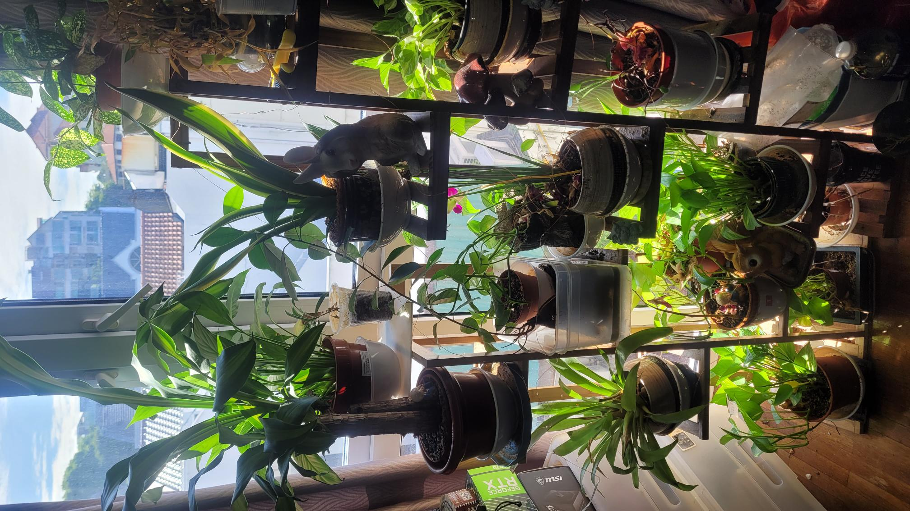

Aquascaping & Aquariums
Maintaining aquatic ecosystems is both a relaxing pastime and a fascinating biological balancing act. I enjoy designing planted tanks and managing the delicate water chemistry required to keep aquatic life thriving.
This hobby actually crosses over into my engineering work quite a bit, inspiring automated life-support and feeding systems like the FISHER platform to ensure optimal aquatic care even when I am away from the tanks.
Advanced 3D Printing
I am a massive advocate for open-source hardware and rapid prototyping. Running an array of 3D printers, including high-speed dual-nozzle systems like the Bambu Lab H2D, allows me to instantly bring CAD designs into reality.
Whether I am fabricating complex custom enclosures for my microcontrollers, printing structural brackets for camera arrays, or just making functional household fixes, 3D printing is a cornerstone of my daily workflow.
PC & Edge Node Building
I love the hardware side of computing. From assembling high-performance workstations for intensive deep learning tasks to configuring low-power edge computing nodes (like the Intel N95 and Raspberry Pi), I enjoy optimizing silicon for specific tasks.
For me, building a PC isn't just about gaming or standard computing; it is about creating decentralized "brains" capable of running neural networks and managing complex USB peripherals smoothly.
Playing Guitar
Music provides a necessary break from the highly analytical nature of scientific research. Playing the guitar is my favorite way to disconnect from screens and data.
It is a purely creative outlet that helps me reset, focus on rhythm and melody, and clear my head after a long day of coding or running experiments.

Indoor Gardening
Cultivating plants indoors is incredibly rewarding. I enjoy the challenge of optimizing lighting, soil moisture, and nutrients to grow everything from decorative houseplants to dense microgreen trays.
This hobby directly fueled my interest in agricultural AI. What started as a manual process of checking soil and watering schedules eventually evolved into the automated, vision-driven systems I now build to maintain optimal plant health.